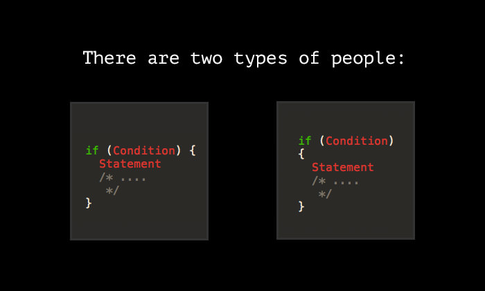

Coding styles are meant to give your code a standard format that helps with maintaining and reading your code. It’s also supposed to be very helpful when working on large coding projects with other people. This is because helps everyone write in such a way that the code is going to come out uniform and improve readability later. Coding styles work as essentially a grammar check but for coding. It does automatically helps you format the code by making sure you indent certain lines of code after writing a function, have a blank space after the last line, and have a space at the end of a function from the curly bracket.
I think coding styles are worth the time to implement and have in in your tools while coding. Especially when you’re starting or joining a group project. Everyone should be writing code similar in that sense just so that if anyone else ever must read the code they can easily follow what’s going on in each line. So, it’s more than just a glorified grammar check tool. It makes your life easier because you won’t have to make those small additions and you can focus more on writing your code.
This week I was introduced to the coding style ESLint, which uses the Airbnb coding style. Previously I had never used a particular coding style nor really heard there are standard ones to use. I wouldn’t say I was a messy programmer prior to this so I thought my programming skills were decent and readable. After using ESLint I it was close to my coding style already. But I had to get used to different formatting requirement I don’t typically include in my own code. Like in ESLint you must have a space at the end of the program and when using the curly brackets, you must use a space before using one. I used to never do those so this style kind of made me feel weird while I was writing code. Eventually I got used to it and honestly, I really enjoy using it because it does all the checks to ensure my code has the same formatting throughout.